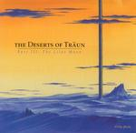

| Artist: | The Deserts Of Traun |
| Title: | The Lilac Moon |
| Label: | Bruhtal Shocks |
| Length(s): | 56 minutes |
| Year(s) of release: | 2003 |
| Month of review: | [07/2005] |
| 1) | Awaiting The Majesty Of Extremes | 3.01 |
| 2) | The Detective In Disguise | 2.18 |
| 3) | Report To The Fruitless Kingdom | 1.22 |
| 4) | The Detective And Gary Prepare | 1.17 |
| 5) | Searching The Swamps | 4.09 |
| 6) | The Court Of The BlackMetal Princess | 2.10 |
| 7) | Escape From The Crystal Caverns | 3.47 |
| 8) | Descending The Crystal Mountain | 2.10 |
| 9) | The Desert Of Träun | 4.36 |
| 10) | Greetings From The Lilac Moon | 1.09 |
| 11) | Seeking The Navigator | 1.46 |
| 12) | Prisoner In The Brig | 0.58 |
| 13) | Battle Upon The Space Galleon | 2.09 |
| 14) | Awaiting The Sun | 2.43 |
| 15) | Sailing The Electrolytic Ocean | 3.08 |
| 16) | The Gift Of The Whirlpool Vortex | 3.31 |
| 17) | Longing And Foreseeing | 1.24 |
| 18) | The Uncompromising Blizzard | 2.55 |
| 19) | The Cave | 1.36 |
| 20) | An Unlikely Visitor | 2.32 |
| 21) | Infiltrating The Fortress Of Absolute Zero | 2.05 |
| 22) | Showdown In The Atrium Of Fallacious Foliage | 1.53 |
| 23) | Homecoming In The Fruitless Kingdom | 1.25 |
| 24) | The Destruction Of The Elevator | 1.51 |
Report To The Fruitless Kingdom brings us to folky waters, albeit more experimental than some. The heavy rhythm guitars add an accent of their own, while the string like section are mellow and melodious. The Detective And Gary Prepare has quite a bit of groove mainly due to the organ. The lead guitars are sharp, while the drummer keeps himself very busy. This track has a very jammy feel.
Searching The Swamps is one of the longer tunes, opening with the primordial grumblings of all manners of creatures. There is something of Karda Estra in here, due to both mood, melody and the use of bassoon. A strongly gothic feel pervades this song. Halfway we run into military drums, while obscure, throaty vocals add to the atmosphere. At the end we end up in progmetal waters.
The Court Of The BlackMetal Princess opens with violin, ending with sweeping orchestral passages with disturbingly fast double bass and some grunting. This is not for the faint of heart. The Wicked come to mind here (their album ...For Theirs Is The Flesh is also an SF story).
Escape From The Crystal Caverns features the tinkling of crystals and assorted percussion. A bit formless at first, but a nice breather on to the way to descent. The middle part has acoustic guitar in Spanish style with the sax going wild, and the drummer versatile. And when the guitars set in, chaos is complete. Manic stuff.
Descending The Crystal Mountain brings us back to folk territory, with a dancing merry tune. The violin is the dominant element. As often happens, the peacefulness and friendliness is broken by the advent of heavy guitars and drums.
The title track is up next, a rather beat rich but steady affair. The keyboards are strongly orchestral and full. A bit like the opener. At the end the guitars do wreak their vengeance for being left out so long.
Greetings From The Lilac Moon and the two follow-upd Seeking The Navigator and Prisoner In The Brig are relatively short tunes. The first of these is a rather minimal and monotonous affair with a jazzy Latin feel. The second is a bit of an oddball one, opening with a children tune like passage, altenated with a bit of free jazz. The final one is filmic again, with strumming acoustic guitar and plenty of somber melodies in Karda Estra style.
Halfway through the tunes, Battle Upon The Space Galleon opens forcefully and fluently with heavy rhythm guitars. This is typical instrumental progmetal of the rougher kind, assisted by grunt like vocals (mixed somewhere in the back). Awaiting The Sun is rather scarce with the twang of steel guitar, proceeding bouncily.
Sailing The Electrolytic Ocean brings us a sea of white noise, replaced by a quiet bass and somewhat trumpet like sounds (on a synth). This sounds rather tinny. The sound of this song is quite weird, also in the second half where the tinny key sound has been replaced by gurgly synths.
We are getting mellow again as we move into The Gift Of The Whirlpool Vortex, but take note of the pounding bass. We are very much in electronic rock area, with programmed drums. There is more than a hint of eighties New Wave here, but all a bit stranger than usual. In the second half the speed goed up, and the music can be likened to say Underworld.
Longing And Foreseeing not surprisingly is a sadly romantic piece with strings dominant. Halfway, pounding drums and forbidding guitars set in. The wind rises with The Uncompromising Blizzard. It is not surprising that this is one of the heavier tracks in which the guitar reigns.
The Cave is dominated by flute and keyboards, very romantic and sad again. It is also the track with the shortest title: more of those! An Unlikely Visitor continues the sad melodies this time with string like keyboards and acoustic guitar.
Infiltrating The Fortress Of Absolute Zero brings us blinding rock alternated with a meandering sax and versatile rhythms. This is pure instrumental progrock, ranging from metal to jazzrock. Showdown In The Atrium Of Fallacious Foliage on the other hand has march rhythms, marimba and a fluting keyboards playing along.
We end orchestrally with Homecoming In The Fruitless Kingdom and The Destruction Of The Elevator.